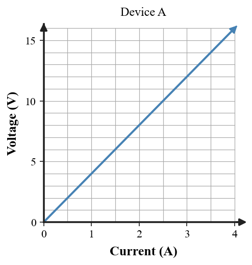
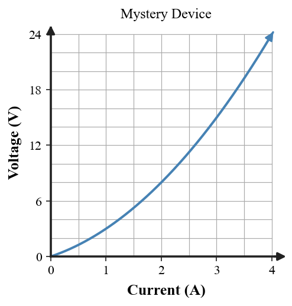
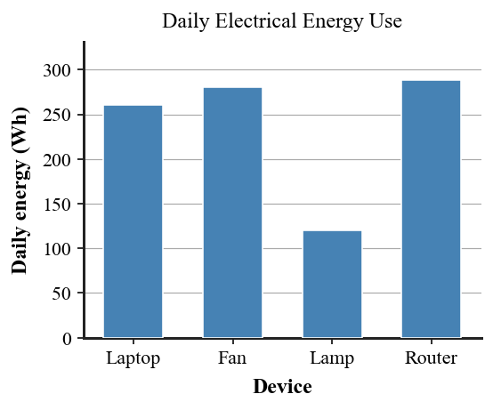

| 1A neutral metal sphere loses some electrons. What is its final net charge, and what did neutral mean before electrons were removed? | 2For the two charged objects shown, state whether the electric interaction is attraction or repulsion. |
| 3The same excess charge is placed on a copper strip and a rubber strip. On which material will charge redistribute more easily, and why? | 4Two charges exert force F at separation r. The charge amounts stay the same and the separation becomes 3r. What is the new force in terms of F? |
| 1Two neutral materials are rubbed. Six electrons move from the cloth to the plastic strip. State the final sign of each and explain how total charge is conserved. | 2A charged rod is brought near a neutral metal sphere without touching it, and charge separates inside the sphere. Name the charging process. |
| 3A positively charged sphere is near a negatively charged sphere. What interaction should occur? | 4An electric force is 20 N. One charge is doubled while the separation is also doubled. Use Coulomb proportional reasoning to find the new force. |
| 1Which statement best describes a positively charged solid object? A. It contains only protons. B. It has fewer electrons than protons. C. It has more electrons than protons. D. It contains no charged particles. | 2A student says, "Rubbing a balloon creates new negative charge on the balloon." Identify the error and revise the claim using electron transfer and conservation of charge. |
| 3Two objects have the same shape and size. One is copper and one is dry plastic. Which better allows induced charge to redistribute across the object? Explain. | 4The diagram shows a charged rod near a neutral conductor, with no contact. Explain the electron redistribution and identify the charging idea represented. |
| 1A positive test charge is moved farther from a nearby negative charge, against their attraction. Does the system's electric potential energy increase or decrease? Explain briefly. | 2A device transfers 18 J of energy for every 3 C of charge. Use V = E/q to determine the voltage. |
| 3Twelve coulombs of charge pass a point in 4 s. Use I = Q/t to determine the current. | 4Why is there no sustained current in the circuit shown? State the change needed to make a complete path. |
| 1In the glowing-lamp circuit, distinguish what moves around the loop from what the lamp receives and transforms into light and thermal energy. | 2In the electric-pump analogy, what job does a battery or generator perform? State one important limit of the analogy. |
| 3A source provides 24 J of energy per 2 C of charge. Determine its voltage and state what the number means. | 4Ten coulombs of charge pass a point in 5 s. Determine the current and interpret the result in C/s. |
| 1A capacitor separates equal and opposite charges onto two plates. Explain why separating the charges can store electric potential energy. | 2A lamp circuit has a battery and intact wires but one gap in the path. Why can the source still have a voltage even though steady current is zero? |
| 3A student says, "The battery sends current to the bulb, where the current is changed into light." Critique the statement using charge flow, voltage, and energy transfer. | 4Compare a battery or generator to a pump: what electrical difference does the source maintain, and why should we not say that voltage itself flows? |
| 1Define electrical resistance in terms of charge flow. | 2Two copper wires have the same temperature and thickness. Wire X is twice as long as Wire Y. Which has greater resistance, and why? |
| 3A 6-Ω resistor is connected across 18 V. Use V = IR to determine the current. | 4A 4-Ω resistor remains unchanged while voltage rises from 8 V to 16 V. Calculate both currents and describe the pattern. |
| 1At 12 V, resistance changes from 3 Ω to 6 Ω. Calculate the current in each case and describe the effect of doubling resistance. | 2Use the V-versus-I graph to determine Device A's resistance. What feature supports a constant-resistance model?  |
| 3A resistor carries 2.0 A when the voltage across it is 10 V. Determine its resistance. | 4Which phrase best matches resistance? A. energy transferred per charge B. rate of charge flow C. opposition to charge flow D. rate of electrical energy transfer |
| 1Two wires have equal length and material. Wire A is thicker than Wire B. Which has lower resistance and would carry more current at the same voltage? | 2An 8-Ω resistor stays constant while voltage changes from 6 V to 18 V. By what factor does current change? |
| 3A 24-V source is connected first to a 6-Ω resistor and then to a 12-Ω resistor. Compare the two currents. | 4The V-I graph curves upward. Estimate V/I near 1 A and 3 A, then decide whether resistance is constant and explain the evidence.  |
| 1Which quantity is the rate at which electrical energy is transferred: electric power or electrical energy? | 2A 12-V device draws 3.0 A. Use P = IV to determine its electric power. |
| 3A 60-W lamp operates for 4 h. Use E = Pt to determine its electrical energy use in watt-hours. | 4While both are operating, which transfers electrical energy faster: a 1500-W heater or a 60-W lamp? By what factor? |
| 1Use the bar graph to rank the four devices from greatest to least daily electrical energy use.  | 2Two lamps provide similar useful light. One uses 60 W and the other 12 W. What does the lower input power suggest about efficiency if the comparison conditions are equivalent? |
| 3A device operates at 120 V and draws 1.5 A. Determine its electric power. | 4A 75-W device runs for 2 h. Determine the electrical energy used in watt-hours. |
| 1State the difference between electric power and electrical energy in one sentence. | 2Device A uses 100 W for 1 h. Device B uses 25 W for 6 h. Calculate each energy use and identify which uses more. |
| 3A 900-W toaster and a 90-W fan are both operating. Compare their rates of electrical energy transfer. | 4A solar-panel ad says, "Peak rating 400 W, so the panel produces 400 Wh every hour all day." Critique the claim using power, time, and changing illumination conditions. |
| 1Classify the coded circuit as series or parallel using its current-path structure. | 2An open switch creates a gap in the only current path. Why can steady current not continue? |
| 3The two branch currents are 1.2 A and 0.8 A. What is the main-line current before the split? Explain how the paths recombine. | 4Complete the comparison: in an ideal series path, which quantity is the same through each load? Across ideal parallel branches, which quantity is the same? |
| 1Two resistors, 4 Ω and 6 Ω, are connected in series. Determine the equivalent resistance. | 2Three active branches draw 8 A, 7 A, and 5 A from a line protected by a 15-A breaker. Determine total current and explain why the breaker should open. |
| 3Classify the coded circuit as series, parallel, or mixed. | 4One branch of a parallel circuit is opened. Explain why an intact branch can keep operating by tracing its complete path to and from the source. |
| 1A switch leaves a gap in the only loop. Which circuit condition is missing for sustained current? | 2The same two identical bulbs are connected first in series and then in parallel to the same ideal battery. Which arrangement has lower equivalent resistance, and which gives each bulb the full source voltage? |
| 3A 6-Ω resistor and a 3-Ω resistor are connected in parallel. Determine the equivalent resistance and check that it is less than either branch resistance. | 4A student says, "A fuse protects a circuit by absorbing extra current during an overload." Critique the claim using current, heating, and what happens to the circuit path when the fuse operates. |